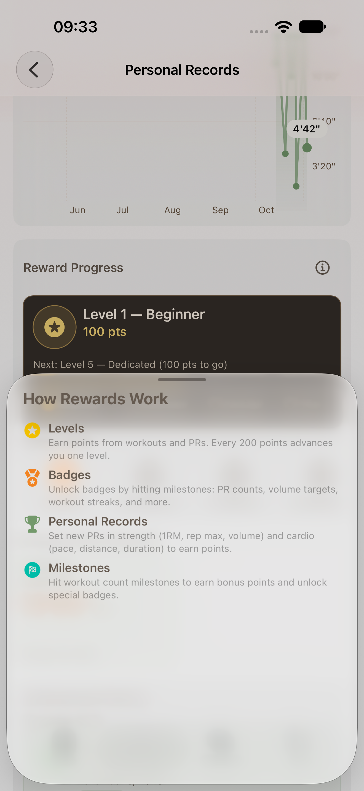
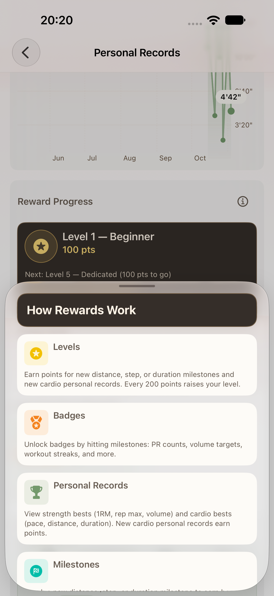
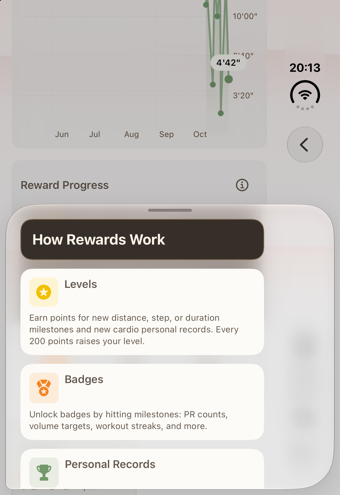
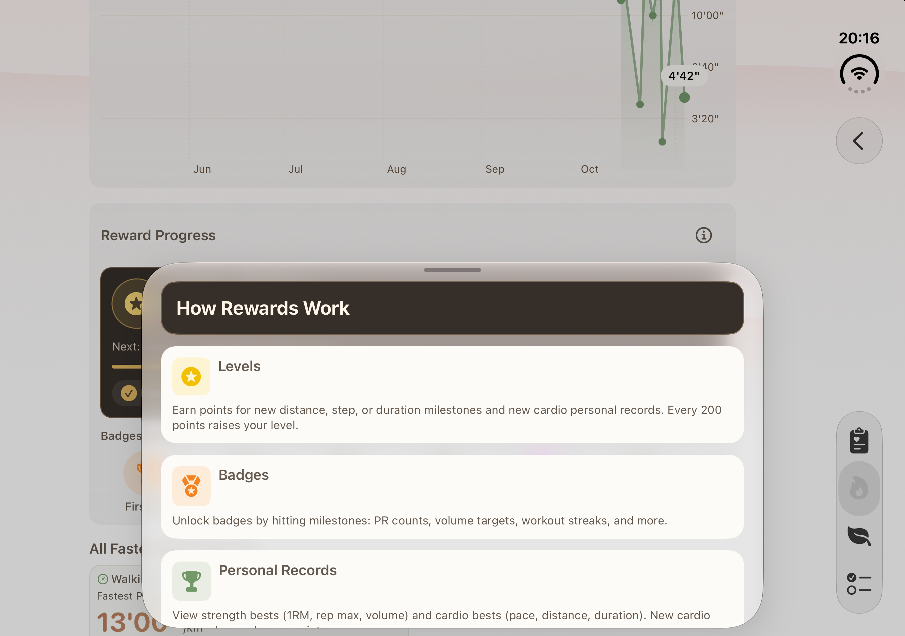
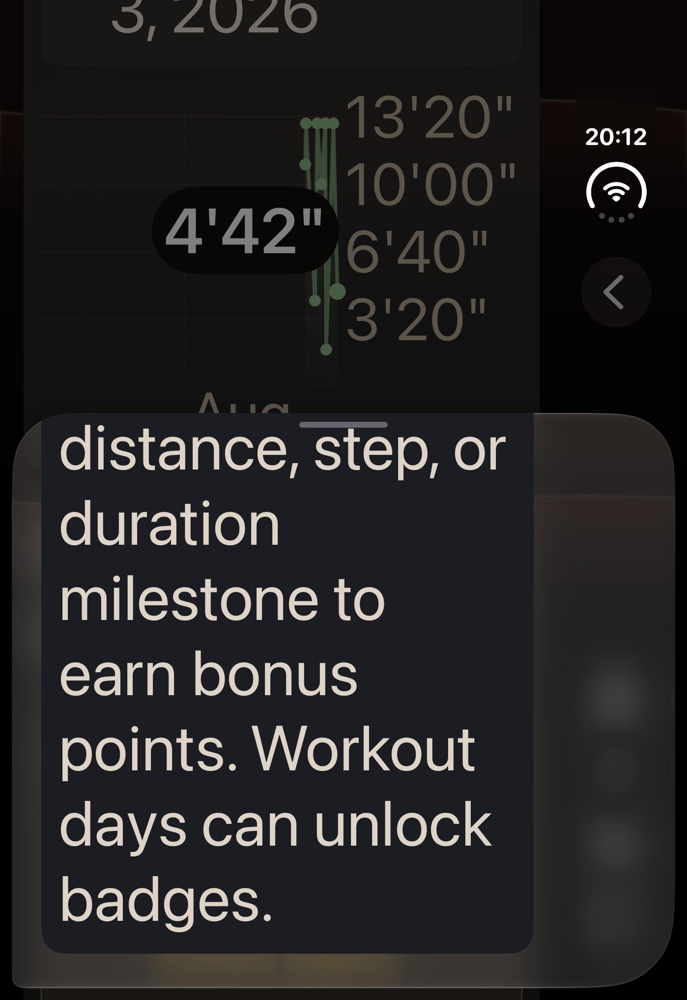
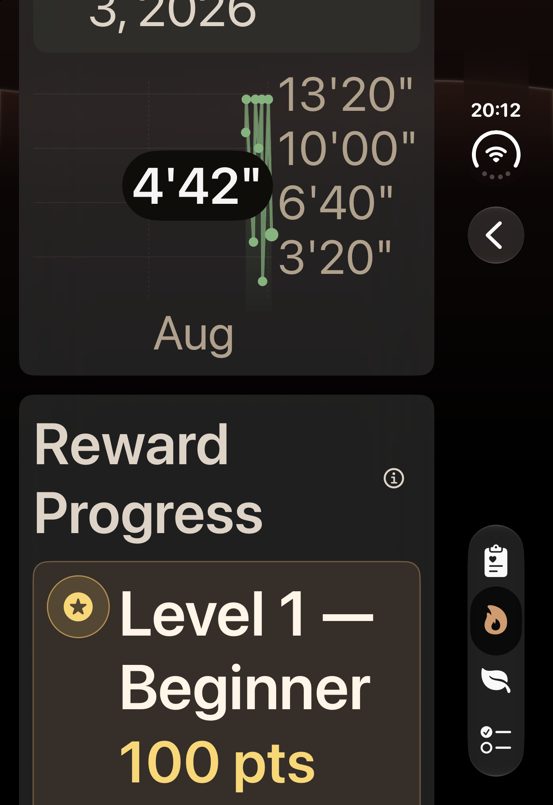
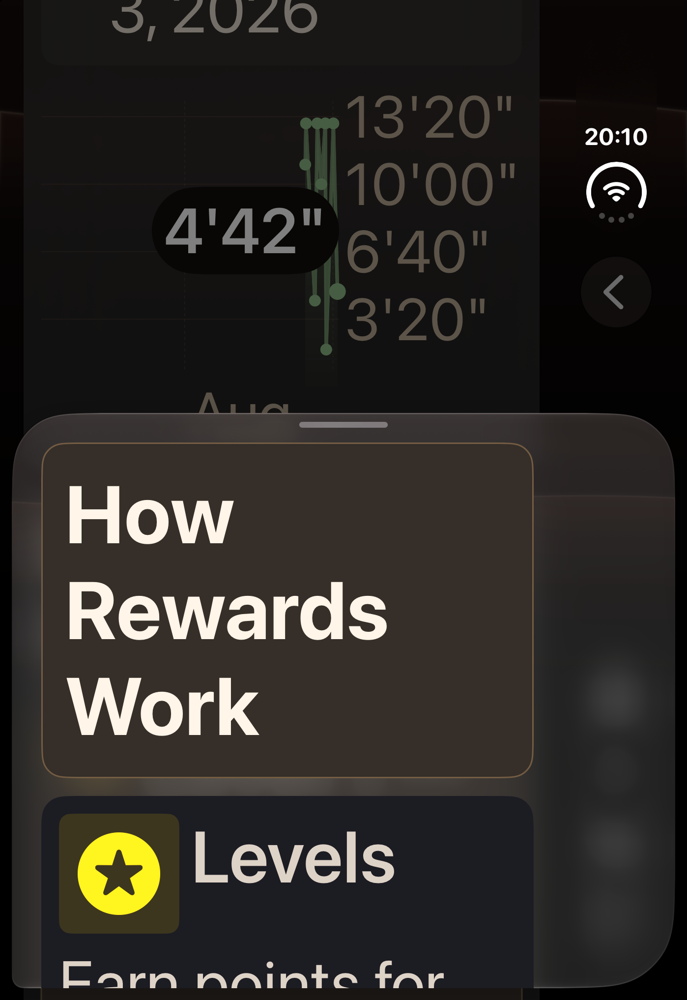
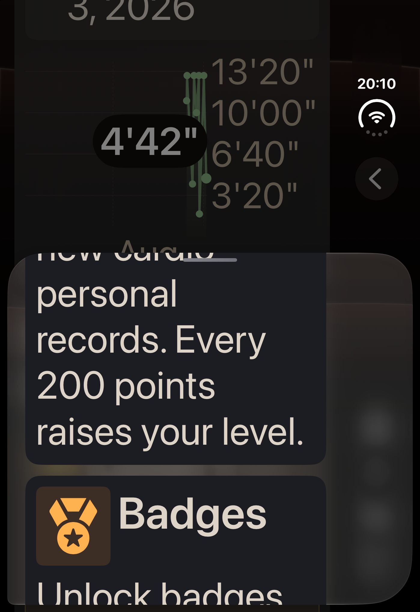
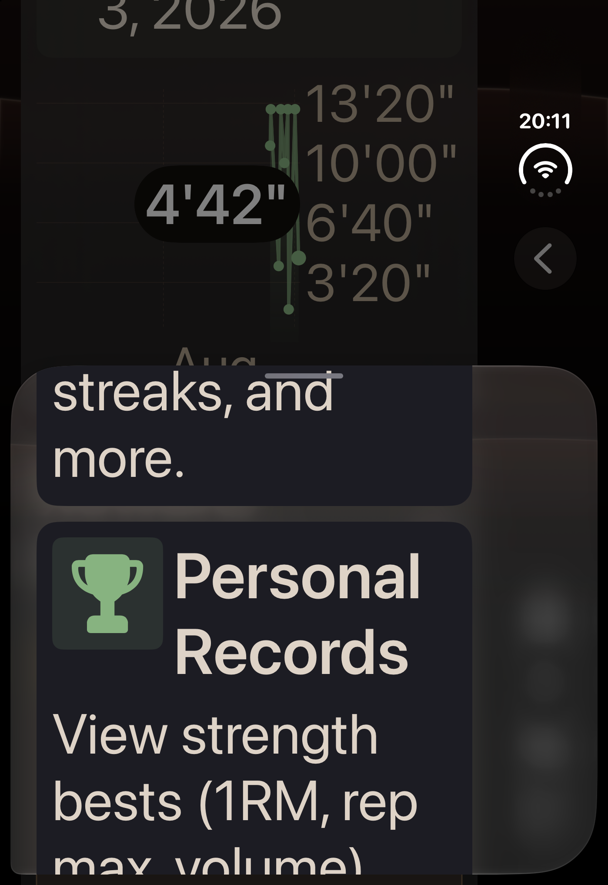
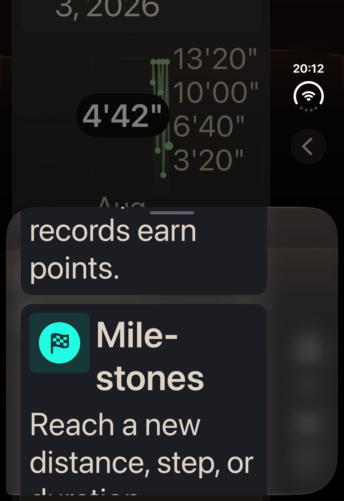

ipad
기존: 해당 기기 원본 캡처 없음; 단일 iPhone 역사 참고 화면, 원본 iPhone 출처 495d (다른 기기 원본 아님). 개편: 실제 촬영 소스 9208e68ca8f2cd1b9e209fd7c9fb40a8164547ef; UID CF0B1619-E221-49BE-910A-07B3460170FC.
개편 실제 화면 대응하는 접근성 기록
대응하는 접근성 기록기존 화면은 단일 원본 iPhone 역사 참고 화면입니다. iPad와 Duo 원본 캡처는 존재하지 않습니다. 개편 화면은 실제 촬영 소스와 기기를 기록합니다. A21 선택 검사 6개와 원본 iPhone 검사 1개를 각각 통과했고, 소스·네이티브·발행 검토를 마쳤습니다.
소스 d87a에서 일반 1건 통과, 최대 글자 크기 1건 실패했습니다. 원본 실행 기록을 보존합니다.
소스 400c에서 일반 1건 통과, 최대 글자 크기 1건 실패했습니다.
소스 cc0의 첫 실행은 저장 공간 부족으로 끝났습니다. 원본 SDK 묶음이 불완전하여 집계 결과가 없습니다.
495d에서 실제 촬영한 유일한 기존 A21 도움말 화면입니다. iPad와 Duo의 기존 A21 캡처는 없습니다.

접근성 기록기존: 실제 원본 iPhone 도움말 (495d), 원본 iPhone 출처 495d (다른 기기 원본 아님). 개편: 실제 촬영 소스 9208e68ca8f2cd1b9e209fd7c9fb40a8164547ef; UID EA8C68CF-3513-4354-B3CD-F4E0EB244A7C.
개편 실제 화면
대응하는 접근성 기록기존: 해당 기기 원본 캡처 없음; 단일 iPhone 역사 참고 화면, 원본 iPhone 출처 495d (다른 기기 원본 아님). 개편: 실제 촬영 소스 9208e68ca8f2cd1b9e209fd7c9fb40a8164547ef; UID CF0B1619-E221-49BE-910A-07B3460170FC.
개편 실제 화면대응하는 접근성 기록기존: 해당 기기 원본 캡처 없음; 단일 iPhone 역사 참고 화면, 원본 iPhone 출처 495d (다른 기기 원본 아님). 개편: 실제 촬영 소스 9208e68ca8f2cd1b9e209fd7c9fb40a8164547ef; UID 87604E03-DD7A-4B04-8816-AE5CB950A322.
개편 실제 화면
대응하는 접근성 기록기존: 해당 기기 원본 캡처 없음; 단일 iPhone 역사 참고 화면, 원본 iPhone 출처 495d (다른 기기 원본 아님). 개편: 실제 촬영 소스 9208e68ca8f2cd1b9e209fd7c9fb40a8164547ef; UID 87604E03-DD7A-4B04-8816-AE5CB950A322.
개편 실제 화면
대응하는 접근성 기록
대응하는 접근성 기록
대응하는 접근성 기록
대응하는 접근성 기록
대응하는 접근성 기록 대응하는 접근성 기록
대응하는 접근성 기록
대응하는 접근성 기록
대응하는 접근성 기록 대응하는 접근성 기록
대응하는 접근성 기록지원되지 않는 기기형 설정은 기기 생성·검사 실행 전 실패했습니다. 이후 설치된 A20 Pro iPad로 실행한 실제 검사 1건은 통과했습니다.